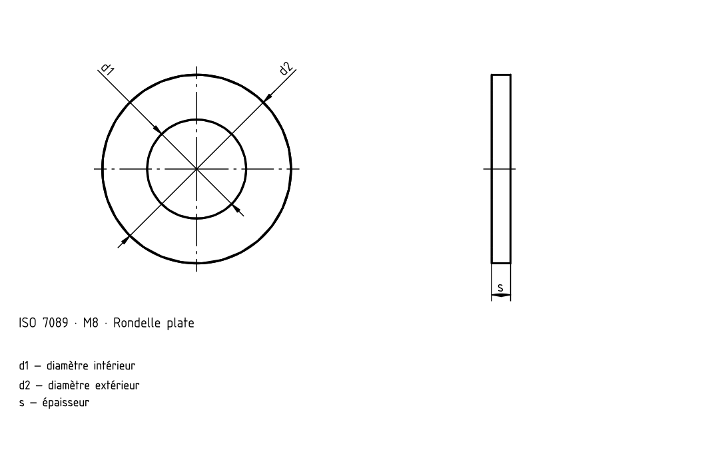
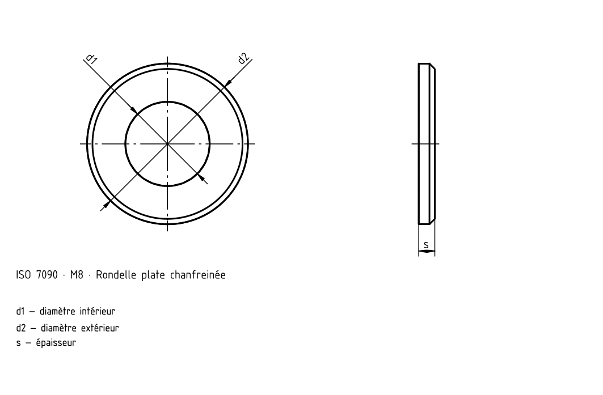
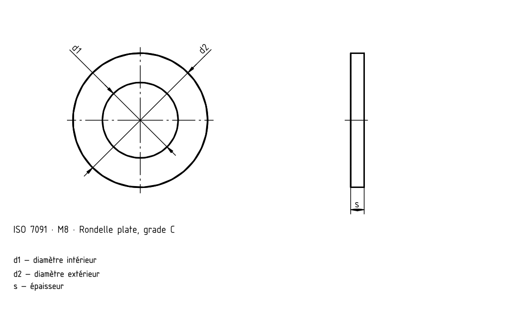

Rondelles pour écrous et têtes hexagonales
Source historique; valeurs et exceptions non intégralement vérifiées selon la norme actuelle.



Source historique; valeurs et exceptions non intégralement vérifiées selon la norme actuelle.


